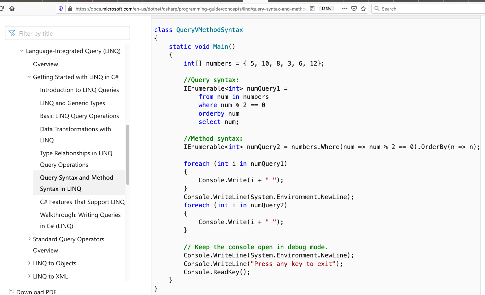
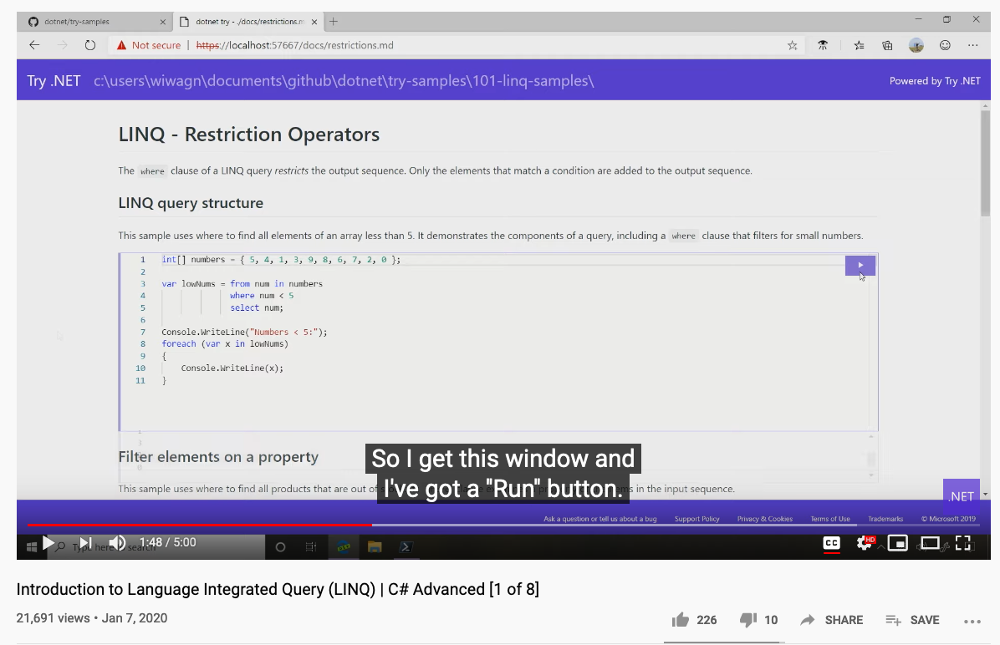

2020-06-23 LINQ
- PostgreSQL
- MariaDB
- MySQL
- Oracle
- SQLite
Django 仍有第三方支持 Microsoft SQL Server
Language Integrated Query (LINQ, pronounced "link") 原本就設計來服務 .NET 的。
如果單獨比較 Object-relational mapping 的話，Django 是明顯勝出的。然而 .NET 整合出的平台，所能做出的產品是超越 Django 。以編程人員的立場而這，樂見兩者有那麼一天，可以互通。
LINQ 有兩種寫法 Query
語法，https://docs.microsoft.com/en-us/dotnet/framework/data/adonet/ef/language-reference/query-expression-syntax-examples-projection，Method
語法,https://docs.microsoft.com/en-us/dotnet/framework/data/adonet/ef/language-reference/method-based-query-syntax-examples-projection。
//Query syntax: IEnumerablenumQuery1 = from num in numbers where num % 2 == 0 orderby num select num; //Method syntax: IEnumerable numQuery2 = numbers.Where(num => num % 2 == 0).OrderBy(n => n);

dotnet-try 沒成功 https://github.com/dotnet/try-samples
和一些人一樣，遇到報錯，https://github.com/dotnet/try-samples/issues/59

EF Core
是可以透過 NuGet Package Manager Console 以命令行方式生成 Entity classes。
MSSQL 可以全備的方式 restore bak 檔案。
PM> Scaffold-DbContext 'Data Source=MARK10\SQLEXPRESS02;Initial Catalog=X***;Integrated Security=True' Microsoft.EntityFrameworkCore.SqlServer' Microsoft.EntityFrameworkCore.SqlServer
必需要先安裝- Microsoft.EntityFrameworkCore
- Microsoft.EntityFrameworkCore.Design
- Microsoft.EntityFrameworkCore.SqlServer
- Microsoft.EntityFrameworkCore.Tools

MSSQL 的管理要單獨練習。EF Core Query 的語句可以在 命令行的項目單獨練習。根據實做經驗，做成桌面應用的控件的確最強，可惜只能運用在 Windows 環境。